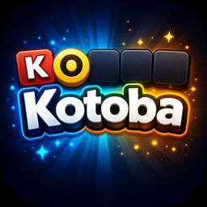
Kotoba
Devine le mot caché en six essais, en français et en japonais. Mot du jour, 240 niveaux d'aventure.
صدرت GTA VI!
منذ الإصدار
العد التنازلي رقم 1 في العالم GTA 6 : الأكثر دقة والأفضل مظهرًا والأكثر اكتمالًا. دقيق حتى الثانية الأخيرة، العد التنازلي حتى منتصف الليل في منطقتك الزمنية.
هل تعلم

Rockstar Games ، 15 أكتوبر 2026. الموسيقى: "Flower in a Hurricane" من تأليف Justice مع Tame Impala وSZA وKing Gizzard & The Lizard Wizard.

 جديدالمقطع الترويجي 3 · الإطلاق، موسيقى العدالة
جديدالمقطع الترويجي 3 · الإطلاق، موسيقى العدالة
 يشاهدExtended Look · 27 دقيقة من اللعب
يشاهدExtended Look · 27 دقيقة من اللعب
 يشاهدمقطورة 2
يشاهدمقطورة 2
 يشاهدمقطورة 1
يشاهدمقطورة 1
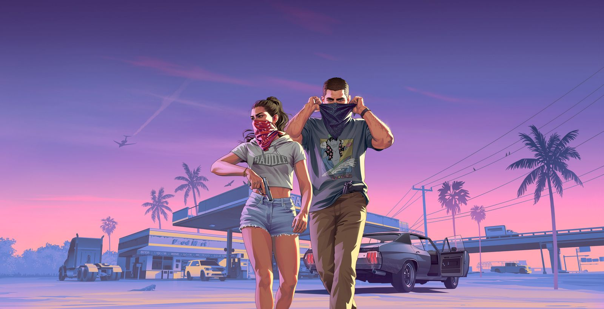
جديدموسيقى GTA 6 : ست محطات، الألبوم، الأغاني الفرديةتم الكشف عنه في 8 أكتوبر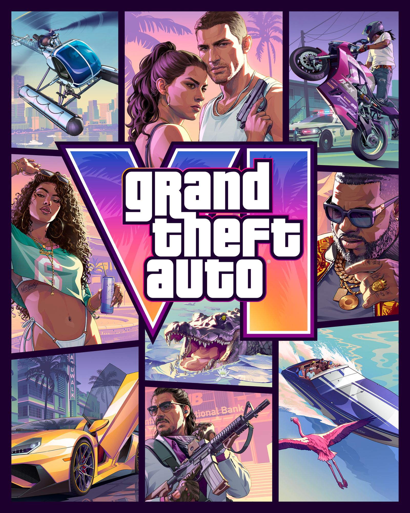
النظام السابق79.99 دولارًا قياسيًا، و99.99 دولارًا نهائيًا، بالإضافة إلى حزمة Vice City القديمةمقارنة الأسعار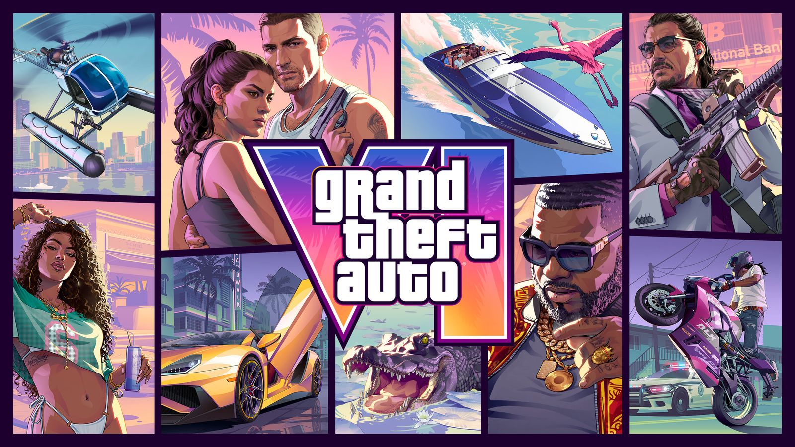
Rockstar Storeمجموعة GTA VI : المحملات، القبعات، Zippo، الفينيليتم تحديث الأسعار كل 30 دقيقة صندوق جامعThe Goodtime State ، مجموعة Vice City ، 399.99 يورولا تتضمن أي لعبة، لعبة واحدة لكل شخص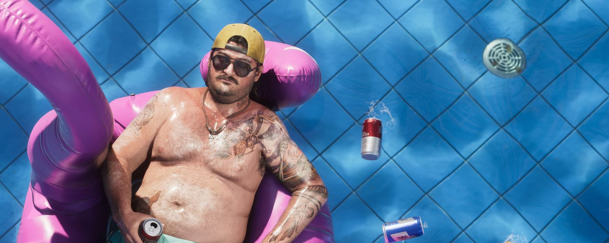
مجتمعجدار Vice City : تحدث بدون حساب، انضم إلى Discord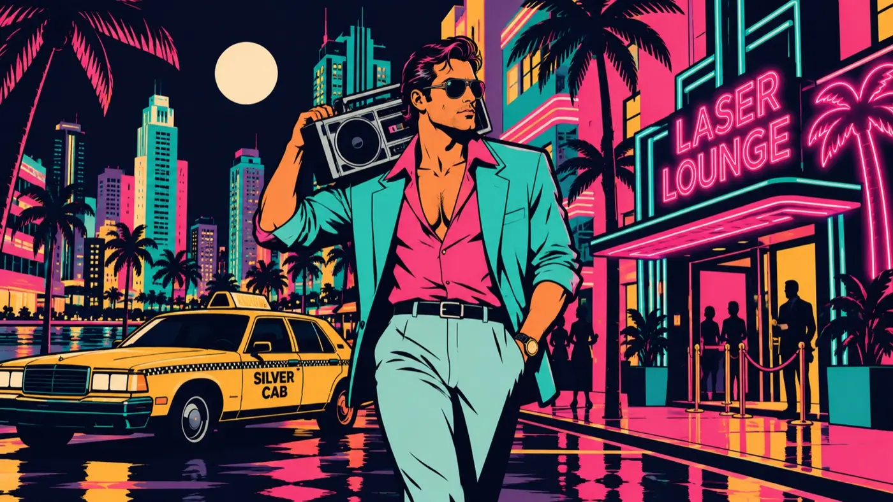
Vice BayVice Bay Radio ، ست محطات FM عام 1986، متاحة للبث مجانًا


أشمس مكان في أمريكا وجانبها المظلم. دولة كاملة للتجول.
لقد عرفوا دائمًا أن الحياة لن تمنحهم أي شيء. سيتعين عليهم الاعتماد على بعضهم البعض للبقاء على قيد الحياة.
أطول عرض تجريبي قدمته Rockstar على الإطلاق، كان في 27 أغسطس 2026. القيادة والقتال والراديو، كل ذلك.
متاحة على PS5 و Xbox Series X|S . هنا: وقت الفتح المحلي والأخبار المباشرة والمجتمع.
الإصدارفيديوهات Rockstar Games الحقيقية بدقة 4K من قناتها الرسمية. لا شيء آخر، لا شيء مزيف.
ست محطات FM من فايس باي، 1986. سينث ويف، تشيبتون، سالسا، أغانٍ هادئة وجاز، مع مذيعين وفواصل. الموسيقى المثالية للانتظار.
Musique libre CC BY · Animateurs et jingles OKALAM Studio · vicebayradio.com · Instagram @vicebayradio
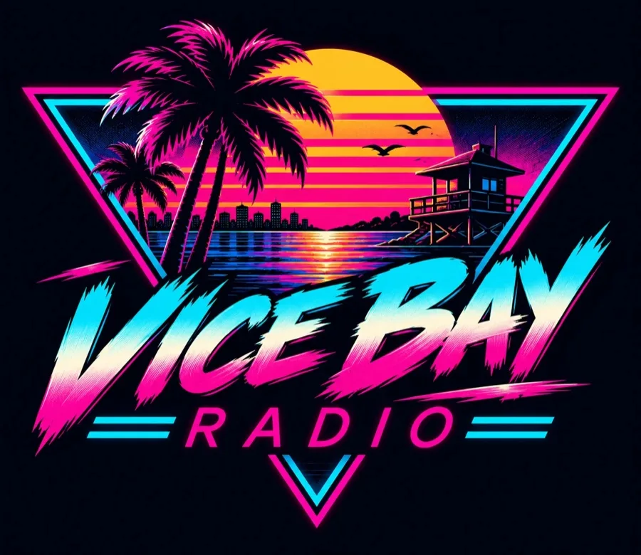
قريبًا على iPhone وAndroidiOS · Android · OKALAM Studio
Vice Break: 500 مستوى نيون، راديو مدمج. iPhone في 12 نوفمبر، وAndroid متاح الآن.
لعبة كسر الطوب النيونية من إنتاجنا. 500 مرحلة في Vice Bay، زعماء، مكافآت، والراديو في الخلفية. تصدر على iPhone في 12 نوفمبر 2026، قبل أسبوع من GTA 6، وهي متاحة بالفعل على Android.
إصدار iPhone: 12 نوفمبر 2026 · Android: متاح


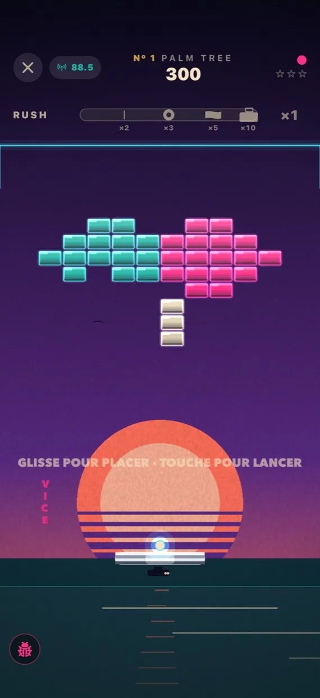
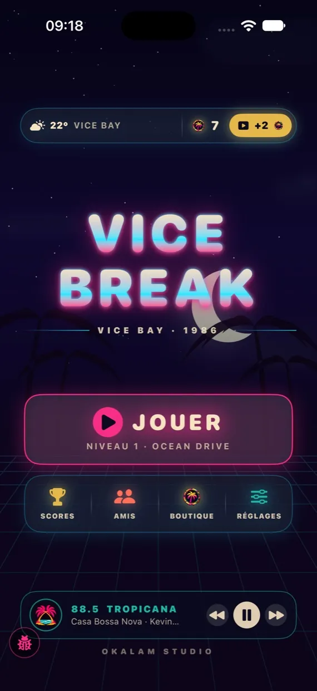
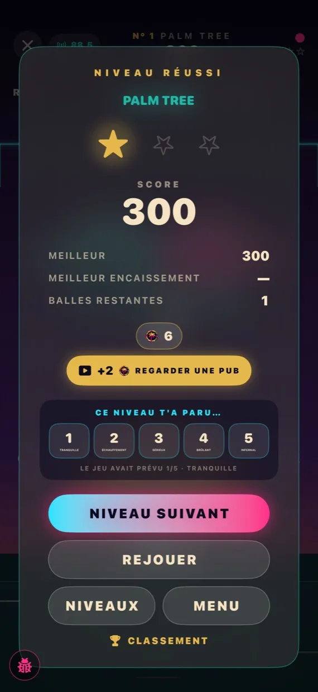
من الشاطئ إلى ناطحات السحاب، لكل منطقة في فايس باي طوبها وفخاخها وزعيمها.
المحطات الست تعمل في الخلفية. غيّر التردد دون مغادرة اللعبة.
شمس سينث ويف، شبكة سماوية، أرجواني وذهبي. تحية للعصر الذهبي لفايس سيتي.
ممولة بالإعلانات ومتجر صغير للمكافآت. لا إعلانات أثناء المراحل.
OKALAM Studio · gratuites · iOS et Android

Devine le mot caché en six essais, en français et en japonais. Mot du jour, 240 niveaux d'aventure.
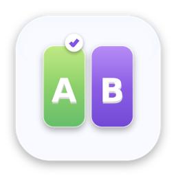
Chaque jour une question A ou B. Vote, compare avec tes amis et avec le monde.
Le casse-briques néon de Vice Bay. Sortie le 12 novembre 2026, une semaine avant GTA 6.
Du même studio que cette radio : OKALAM Studio.
حساب Vice Bay Radio على إنستغرام: صور GTA 6، كواليس Vice Break، ميمات وقصص هيئة التحرير. تابعونا، كل شيء يبدأ هناك.
@vicebayradio
تابع Vice Bay على إنستغرامالإعلانات الرسمية من Rockstar أولًا، ثم صحافة العالم بلغتك. تحديث تلقائي في الوقت الفعلي، كل دقيقة.
يعيش · تم التحديث
 ذكرت 2026-11-13GTA 6: PlayStation says it launches on PS5 in one week, pre-orders open
ذكرت 2026-11-13GTA 6: PlayStation says it launches on PS5 in one week, pre-orders openPlayStation's official X account posted on November 12 that GTA 6 launches on PS5 in one week with pre-orders available now; release is set for November 19.
 ذكرت 2026-11-12عطلة نهاية الأسبوع الافتتاحية GTA 6 : يقول بنك أوف أمريكا إن Take-Two تحتاج إلى 1.9 مليار دولار
ذكرت 2026-11-12عطلة نهاية الأسبوع الافتتاحية GTA 6 : يقول بنك أوف أمريكا إن Take-Two تحتاج إلى 1.9 مليار دولاريحتاج Take-Two إلى ما لا يقل عن 1.9 مليار دولار في الأيام الثلاثة الأولى لإرضاء المستثمرين المتفائلين، كما يقول Bank of America، وفقًا لما أوردته Proactive.
 ذكرت 2026-11-12وظيفة GTA 6 : يقوم كالشي بتعيين باحث للعب ودراسة اقتصاد اللعبة
ذكرت 2026-11-12وظيفة GTA 6 : يقوم كالشي بتعيين باحث للعب ودراسة اقتصاد اللعبةسوق التنبؤ، نشر Kalshi وظيفة على LinkedIn لـ " GTA 6 Researcher" براتب يتراوح بين 100.000 إلى 120.000 دولار، وفقًا لموقع Mashable.
 ذكرت 2026-11-12GTA 6 : Pocketpair يمنح الموظفين خمسة أيام إجازة للعب عند إطلاقها في نوفمبر
ذكرت 2026-11-12GTA 6 : Pocketpair يمنح الموظفين خمسة أيام إجازة للعب عند إطلاقها في نوفمبريخصص استوديو Palworld الفترة من 19 إلى 23 نوفمبر للموظفين الذين يخططون للعب، وفقًا لموقع IGN وPush Square.
فيديوهات GTA 6 نشرت اليوم جميع القنوات. يتم تحديثه كل ساعة.
نريد GTA VI بالعربية
ملايين اللاعبين في العالم العربي يطالبون بنسخة عربية من GTA 6. فتحت Rockstar قناة رسمية بالعربية، لكن العربية ليست ضمن اللغات الـ13 عند الإطلاق. هذا الموقع مترجم إلى العربية، وننقل مطلبهم بكل فخر.
ملايين اللاعبين العرب يستحقون لعب GTA VI بلغتهم. هذا الموقع معكم: مترجم بالكامل إلى العربية، ويرفع صوتكم إلى Rockstar.
العودة إلى ولاية ليونيدا ومدينتها الأسطورية المستوحاة من ميامي: شواطئ، نيون، مستنقعات وفوضى.
أول ثنائي قابل للعب في السلسلة على طريقة بوني وكلايد. لوسيا أول بطلة رئيسية في GTA حديثة.
الأجهزة المنزلية أولًا. نسخة الحاسوب لاحقًا، كما حدث مع GTA V.
القياسية 79.99 دولارًا، الـ Ultimate بـ 99.99 دولارًا. الطلب المسبق متاح منذ 25 يونيو 2026، مع مكافأة Vintage Vice City Pack.
تم التحقق من المعلومات في 7 octobre 2026 · الكتاب المقدس · الأسئلة الشائعة · صح أم خطأ · API JSON
انتهى العد التنازلي، والموقع مستمر: أدلة، أكواد غش، خريطة، والراديو للقيادة.